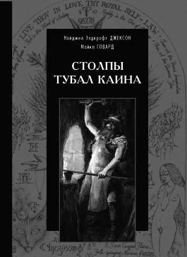

Олег Телемский
Да не иссякнет…
Предисловие к книге М. Говарда и Э. Джонсона
«Столпы Тубал Каина».
Смыслообразующая ось этой книги — миф о пробудившихся Ангелах. Ангелах, которые пробудились от вековечного сна во власти слепого бога, как только узрели красоту Женщины. Ангелах, которые больше не захотели быть Ангелами, и в благодарность за свободу научили женщин украшать себя, открыли врата тайных знаний, а мужчин научили строить города.
Согласно наиболее распространенной версии этого мифа, на заре человечества Ангелы спускались с небес и вступали в брак с дочерьми человеческими. В «Библии» об этом есть очень странный отрывок, — там сказано, что от союза Сынов Божьих и Дочерей Человеческих родились «сильные и издревле славные люди», но уже следующей строкой неизвестный автор пишет, что «увидел Господь, что развращение человеков велико», и, в общем, решил уничтожить[1]. Почему? В тексте нет к этому пояснений, но после прочтения у внимательного читателя остается чувство недоумения: неужели богу было неугодно появление «сильных» и «славных» людей?
Апокриф Еноха более подробно освещает этот загадочный эпизод. Согласно апокрифу, Ангелы под руководством Самьязы спустились с небес для того, чтобы взять в жены «дочерей человеческих», и от этого союза родились исполины. Более того — эти Ангелы не просто предавались любовным утехам, но и занимались тем, что в современной фантастике называется «прогрессорством». Так, Амезарак научил невежественных людей оккультным заклятиям, Баракал и Темел — наблюдению над звёздами, а Астрадел научил движению Луны. Интересен такой акцент на небесные светила: с одной стороны, это явно указывает на появление астрономических и астрологических знаний, с другой — является очевидной метафорой «посмотреть вверх», то есть, разрушив авидью[2], обрести знание своей звездной природы.
Но больше всех постарался Азазель (он же Самьяза), этот настоящий прогрессор человечества, ставший впоследствии в буквальном смысле «козлом отпущения». Он научил людей искусствам, украшению, косметике, науке делать мечи, ножи, щиты, а также «видеть то, что позади их». Эта последняя фраза, пожалуй, наиболее загадочна, поскольку не очень понятно, о чем идет речь, — о шестом чувстве, позволяющем «затылком» ощущать угрозу нападения, изобретении зеркала, открытии исторической науки, или эта аллегория обозначает способность к визионерскому опыту, то есть понимать те силы, которые находятся «сзади» сознания, то есть в бессознательном.
В любом случае, совершенно очевидно, что Бодрствующие Ангелы против человечества явно ничего не имели и были заинтересованы в его развитии. Ангелы, которые впоследствии были осуждены на проклятие.
Это находится в огромном противоречии с общепринятой монотеистической версией падения Сатаны, как результата гордыни, — в одном случае Сатана «захотел занять трон бога», в другом — мусульманском — «отказался поклониться Адаму».
Что же в начале творения? Любовь и страсть или гордыня и амбиции? Об этом можно долго спорить, но если рассмотреть этот миф с точки зрения истории, то становится очевидно, что все версии, так или иначе связывающие восстание с гордыней, появились гораздо позже «Книги Еноха» — где-то во II–III вв. нашей эры. Насколько мне известно, впервые идея восстания Сатаны против бога появилась в сложной теологической системе Оригена.
Почему же выбор был сделан в пользу более молодого и менее глубокого мифа? Возможно, потому, что цивилизованные римляне имели гораздо более тонкую этическую систему, нежели иудейское племя, и, читая апокриф Еноха, могли бы серьезно усомниться — на той ли стороне они находятся? Ведь если человечество обязано Бодрствующим Ангелам цивилизацией и городской культурой (напомним, что первым строителем города, по версии «Библии», был Каин), то с какой, собственно, стати молиться Яхве, а не благодетелям, выступившим против Яхве, но за Человека?
Секрет в том, что примитивная мораль степных племен: «Кто оказался сильнее, тот и прав», — не действует на людей города и цивилизации: противостояние «морали деревни и морали города» здесь очень актуально. Поэтому миф о Бодрствующих Ангелах был осторожно заменён на миф о восставшем в своей гордыне Сатане.
Одна из моих любимых идей, изначально воспринятая интуитивно, — о том, что Сатана и Самьяза (Люцифер) это различные персонажи, — здесь находит неожиданное подтверждение. В то время как Сатана регулярно навещал Господа и давал ему «удобные советы», о чем нам говорит «Книга Иова», Самьяза УЖЕ был брошен в подземное заточение, о чем нам говорит «Книга Еноха»[3].
Исходная версия мифа «Книги Еноха» как бы говорит: самый страшный грех — это соединение противоположностей, нарушение уровней, смешение земного и небесного. Ангелы — довольствуйтесь ангельским, люди — людским. Как спел в известной песне Бранимир: «Коли выпало тебе быть брахманом, то давай своей скотине пинка». Незыблемость уровней бытия утверждается свыше, и наказание за его нарушение — смерть и вечное проклятие. Заметьте: ни о какой «гордыни» в случае Самьязы или Азазеля не идет речи, — они не «посягнули на трон бога», но, наоборот, спустились в мир людей, (на тот момент уже после грехопадения) и не утверждали свое господство за счет знаний недоступным людям, но щедро делились с людьми своими знаниями[4].
«Книга Еноха» рисует неутешительную картину: Бодрствующие Ангелы принуждены смотреть на гибель «любимцев своих и детей своих», а потом брошены на вечность в «отверстие в пустыне, которая находится в Дудаеле». Но стоит ли верить заведомо пристрастным и пропагандистским текстам? Мифологические и исторические данные говорят нам не о поражении, но о постоянной борьбе между Бодрствующими Ангелами Самьязы и Азазеля и... наверное, по аналогии стоит сказать: «спящими» ангелами Яхве. И это противостояние имеет культурное, духовное, магическое, религиозное измерение.
В книге Майкл Говард и Элфорд Джонсон делают беспрецедентную попытку восстановления исторического и мифосимволического измерения традиции «Бодрствующих Ангелов». Авторы анализируют исторические, символические, религиозные данные и на этих, весьма разрозненных данных воссоздают целостную картину эзотерического полотна.
Очевидно, что далеко не каждому читателю то, о чем мы говорим, будет ясно. Почему мы говорим о мифе, как о чем-то само собой разумеющемся, так, словно битва Ангелов и низвержение Самьязы — столь же объективный исторический факт, как, скажем, битва при Ватерлоо. На самом деле, мы, как современные и разумные люди, конечно же, не настаиваем на буквальном прочтении откровения. Однако, исследования Карла Юнга, а позднее и других ученых, — таких, как Мирча Элиаде или Жильб??р Дюран, — убедительно доказывают, что мифологические структуры лежат в самой основе человеческой природы и выражают её самый глубинный, можно сказать, экзистенциальный уровень. Если мы хотим понять некий исторический или психологический процесс (точно так же, как отдельный индивид повторяет в своем развитии эволюцию вида, история развития мифа на протяжении истории культуры повторяется в стадиях психологического развития, что убедительно доказывает тот же Эрих Нойманн), то, к удивлению рационалистов, миф часто оказывается самым полным и исчерпывающим объяснением.
А что мы видим в истории, как не постоянное противостояние двух метапарадигм — парадигмы «большой» и «малой» традиции. Уничтожение гностиков на заре христианской эры, костры инквизиции, преследования тайных обществ и тотальное неприятие «Иных» — что, как не отражение этого извечного противостояния?
Мы можем выбирать, на каком языке мы говорим. И если, говоря в эзотерическом или оккультном дискурсе, стоит говорить о противостоянии «спящих» и «бодрствующих» Ангелов, в культурологическом дискурсе можно сказать о противостоянии «большой» и «малой» традиции, в религиоведческом дискурсе полезно сказать о противостоянии креационисткой и манифестанциолисткой религиозности. Мы можем обратиться к психологии и сказать, что речь идет о конфликте между требованиями персоны и самости в отдельно взятом человеке, или обратиться к гностической антропологии и сказать, что речь идет о противостоянии гилетического (материального и подвластного Иалдабаофу механического человекоголема) и пневматического (имеющего в себе знание высших) человека.
Мифологема Азазеля раз за разом воссоздает себя в литературных произведениях, — таких, как, например, «Черная Книга Арды» Элхе Ниеннах или «Рассказ о Царе Соломоне» Жерара де Нерваля. Философия сверхчеловека, научная и ненаучная фантастика о рождении нового эволюционного вида, тайные духовные традиции и иная поэзия — все это указывает нам на первичную мифологему Бодрствующих Ангелов.
Задача, которую мы ставим, — это определить основные признаки и критерии, являющиеся определяющими для традиции, сердцем которой является миф о Бодрствующих Ангелах, а также по возможности дополнить картину, созданную авторами, примерами из искусства (не случайно искусству, согласно «Книги Еноха», также научил людей Азазель).
В том, что касается первого пункта, то мы завидным образом возвращаемся к принципам, которые были заявлены в наших работах «Малая традиция» и «Манифест Восемь». Это принцип самопознания, принцип трансформации, принцип возрождения через хаос, принцип символического прочтения, принцип элитарности, принцип частичной тайны, принцип соединения противоположностей, принцип сакральной женственности, сакральной сексуальности, принцип иллюминизма, принцип эволюции, принцип трансгрессии и, наконец, принцип художника.
Однако теперь, благодаря книге Майкла Говарда, мы начинаем понимать сакральное и мифологическое основание этих принципов, коренящихся в мифологеме Бодрствующих Ангелов. Так, принцип трансформации проистекает из радикального неприятия привязанности к фиксированной форме. Ангел желает стать человеком, человек — обрести ангельское измерение. Цель — соединение. «О, бог, снизойди и соединись с человеком», — пишет Кроули. Непривязанность к фиксированной форме — это и есть подвиг Бодрствующих Ангелов во имя страсти отказавшихся от небесной неизменности.
Соединяясь с «дочерями человеческими», Ангелы Самьязы в некотором смысле «нисходят в хаос», и тем самым они преображаются и дают жизнь новым видам и формам. Отдав себя, они рождают науку, культуру и тайные знания. Влечение Ангелов, поставленное выше требований неизменности творения, полагается в основу идей почитания женского начала и сакральной сексуальности, которая как раз категорически не принимается Яхве и его пророками. То, что для Яхве «мерзость вавилонская», для Самьязы-Азазеля — высочайшее самоосуществление.
Именно Азазель есть отец искусств и наук. В этом отношении утверждения Кроули: «Подлинный художник выше мага» и «Наш метод наука» — утверждают парадигму эзотерического знания, в котором наука и искусство являются неотъемлемыми гранями пути. Далее мы проследим, как преломляется мифологема Азазеля в наиболее значимых произведениях люциферианского искусства.
Дополнительное измерение в свете этого мифа обретает и принцип элитарности, в силу которого мы полагаем существование в человечестве трех различных и малопересекающися видов человека, между которыми практически нет ничего общего. В романе «Дамиан» Герман Гессе говорит об особой «Печати Каина», которая и выделяет избранную касту людей. Но «Печать Каина» может рассматриваться и как «потомство Азазеля», то есть титаны (заметим, что слово «Титан», вопреки религиозной догме, до сих пор является обозначением чего-то величественного и значимого), несущие в себе соединение земли и неба.
В работе о малой традиции мы говорили, что важнейшим признаком малой традиции является установка на интеграцию. Целостность, а не совершенство, — как пишет Юнг. Добро и зло, свет и тьма, небо и земля ищут соединение в третьей грани; эта потребность соединения, а не разделения, — основной и проходящий через историю посыл. И проносящаяся через века козлиная песнь трагедии Азазеля — это вопль по потерянной целостности соединения ангельского и человеческого.
Изучая гностические, алхимические, герметические тексты, мы видим, что серебряной нитью проходит через них одна идея — идея соединения противоположностей. Неважно, говорим ли мы о гностической традиции, где в ключевом Евангелии говорится, что «Свет и тьма, жизнь и смерть, правое и левое — братья друг другу», говорим ли мы о герметической или алхимической традиции, которая, по точному замечанию Юнга, была буквально «одержима архетипом коньюнкции». Говорим ли мы об особого рода визионерском опыте в духе Уильяма Блейка или Мартиэль — будь то «Бракосочетание ада и рая» или бессмертная «Лилит» («Твой мир, разорванный творцом на черное и белое»). Вспомним ли мы слова Кроули, что «язвы сифилитика столь же святы, как стигматы святого»[5]. Всегда, я еще раз повторяю — всегда, исключений тут быть не может, — мы встретим призыв к обретению целостности по ту сторону конвенциональной и разделяющей морали. И этот зов целостности доносится до нас из того космологического события великой коньюнкции неба и земли.
Мифологема Бодрствующих Ангелов время от времени прорывается в литературе. Наиболее очевидные свидетельства подобного метафизического нонконформизма мы можем проследить в «Каине» Байрона, «Рассказе о царе Соломоне и царице Савской» Жерара де Нерваля, «Дамиане» Германа Гессе, «Сказаниях о Титанах» Якоба Голосовкера, а также, как это не покажется странным предубежденному читателю, в «Черной Книге Арды», написанной Элхе Ниеннах. Хотя в последнем случае мы вынуждены повторить слова из драмы Пушкина: «Ты, Моцарт, недостоин сам себя», — следует отделять личность художника от его творения и признать огромное значение данного произведения для линии метафизического нонконформизма.
Майкл Говард начал исследование традиции метафизического нонконформизма, поместив в ядро этого исследования миф о Бодрствующих Ангелах. В связи с этим необходимо исследовать и другие ядерные мифы нонконформисткой линии, — и это, прежде всего, миф Симона-Фауста и миф о Лилит, который также упоминается в этой книге.
В завершении этого небольшого предисловия я хотел бы поделиться своим личным опытом открытия мифа Азазеля.
Десять лет назад я впервые увидел картину Елены Адарченко «Ангел и Женщина». Картина заворожила меня тайной, в ней сокрытой, и все объяснения, которыми я пытался объяснить её очарование и власть на тот момент, были неполны. Однако уже тогда, впервые создавая свой сайт, я поместил эту картину на главную страницу сайта. Тогда, еще не отличая личное от архетипического, мне казалось, что эта картина в совершенстве выражает принцип аристократического мировоззрения, в котором эротизм, сексуальность и интеллект, сознание, духовность составляют единое целое.
Однако, утверждая так, я (как, впрочем, и художница, что мне известно доподлинно) и не подозревал, что эта картина, которую по праву можно назвать священной сигиллой Касталии, имеет куда более глубокий, мифологический и символический подтекст, нежели конкретная интерпретация. Только миф Бодрствующих Ангелов объяснил мне тайну этой картины. И сейчас, вместе с нашими читателями, я хотел бы поднять тост во славу того, кто отдал себя на прокл??тие, дабы дать человеку возможность обретение индивидуального самобытия.
Lucifer Rising! Да не иссякнет над мiром Звезда Люцифер!
P.S. Ответ автора на вопрос «на каком основании объединены Семьяза и Люцифер, у Еноха и др. ничего подобного нет?»:
— На основании функции. Люцифер = Несущий свет. То есть свет знания, свет просвещения, свет сознания. Люцифер — носитель сознания. Именно в этом качестве он и проявляется в мифе о Самьязе. В отличии от Сатаны, который относится к живым существам плохо (история Иова) Самьяза позиционируется здесь как податель знаний и учитель. Очень уж мне этот апокриф Еноха мою любимую «Чёрную Книгу Арды» (после которой я и стал близок к тёмному вектору) напомнило. Хотя вроде тоже разные имена: Мелькор — Люцифер. А этимологически тождественно: Мельк, малек — земля, земное (Малкут в каббале), а Ор — Свет = Свет Земли.
[1] Бытие 6:4-6. — Прим.ред.
[2] Авидья (санскр. ?????? — неведение) — в инд. мировоззренческих текстах незнание, означающее отсутствие не информированности, но знания экзистенциальной значимости, т.е. знания индивидом своей истинной, аутентичной природы. А., однако, не есть просто отсутствие этого знания, но замещение его знанием ложным, в котором эта аутентичная природа деформируется. (Философия: Энциклопедический словарь. — М.: Гардарики. Под редакцией А.А. Ивина. 2004). — Прим. ред.
[3] Было бы странно ждать строгого линейного времени от мифов (причём разных), тем более, что миф о восстании/падении — достаточно поздний: народу понравился, а «воткнуть» хронологически в канон уже было некуда. Мифологическое время не изоморфно физическому — скажем, постоянно строящий козни, хотя вроде как уже давно прикованный к скале Локи. А уж периодически умирающих и воскресающих богов — в ассортименте. — Прим. ред.
[4] Ничего странного: христианский акцент на «гордыне» (на самом де деле — гордости, «инстинкте самосохранения личности», которой требуется самостоятельность, и которая не может удовлетвориться абсолютным послушанием) — лишь следствие того, что суть деяний монобога замаскирована для приличия — мол, Падшие сами виноваты. Реально же дело в том, что монобогу нужно поклонение, чему мешает и физическая самостоятельность (отделение части ангелов), так и ментальная (обретение знаний). — Прим. VW.
[5] Формально верно: сакральности вне христианского контекста нет ни там, ни там. — Прим. VW.